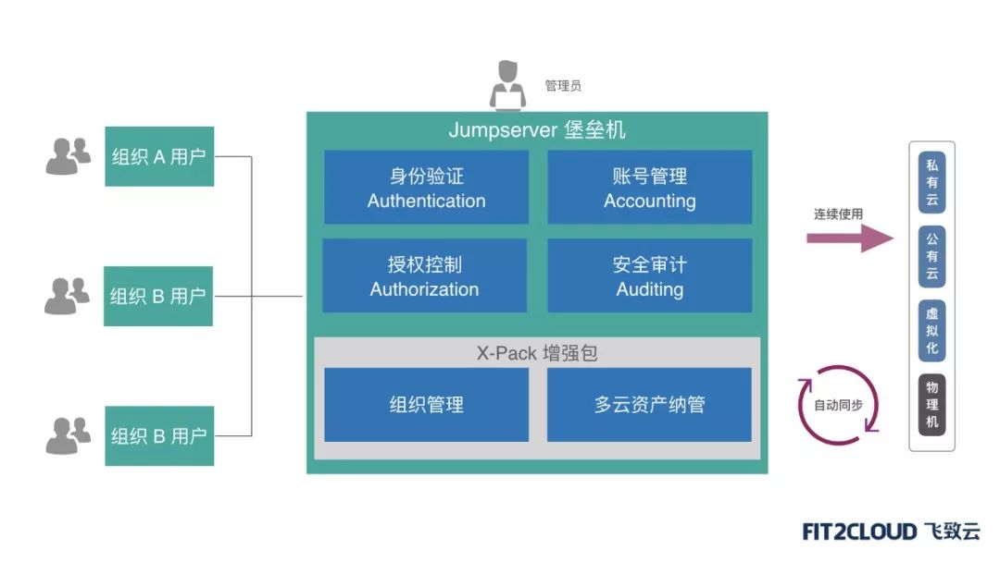

东方明珠通过JumpServer堡垒机高效管控异构化、分布式云端资产
东方明珠新媒体股份有限公司（以下简称为东方明珠）拥有国内最大的多渠道视频集成与分发平台及丰富的文化娱乐消费资源，为用户提供丰富多元、特色鲜明的视频内容服务及一流的视频购物、文旅消费、影视剧及游戏等文娱产品，是上海广播电视台、上海文化广播影视集团有限公司（SMG）旗下统一的产业平台和资本平台。
东方明珠注重企业IT建设，是国内最早大规模采纳公有云服务的文化传媒企业之一。通过在内部成立独立云平台事业部的方式，东方明珠稳步推进企业云平台的建设，并持续扩展云平台在的使用范围。目前，东方明珠正通过混合云的建设积极推动企业IT的云化转型，并通过混合云服务体系面向整个集团提供高效、灵活的企业级云服务。
客户挑战
随着企业IT云化转型的深入，混合云建设成为东方明珠的首选方向。作为广播电视文化的传播平台，其信息系统的安全性至关重要。针对性地构建面向混合云架构的安全合规体系，是东方明珠云平台建设的重要内容。
作为东方明珠云平台安全体系的重要部件，堡垒机承担着在混合云环境下进行安全合规审计的关键作用，而其建设的过程又面临着诸多挑战：
1. 基础设施高度异构化、分布范围广。
首先，混合云平台的建设引入了大量不同类型的IT基础设施，包括企业内部的传统物理设备、虚拟化平台、私有云，以及广泛采用的公有云。这要求堡垒机能够在资产接入和管理上有较好的适配性和灵活性，最好能够适配云平台的API接口，降低平台资源管理的难度；另一方面，由于文化传媒企业需要通过大量的CDN边缘节点来保障视频流播放的流畅性，导致IT资产分布范围广，管理也相对分散。基于堡垒机构建的运维安全审计系统需要提供多级授权管理体系，以适配东方明珠当前的IT管理模式；
2. 混合云中的主机规模持续增长，需要堡垒机具备充分的可扩展性。
随着业务的快速增长，堡垒机需要管理的主机规模也在快速增加。同时，运维安全管理的工作量也在迅速攀升。这需要堡垒机能够对分布式架构提供良好的支持，并通过水平扩容来支持不断增加的资产和不断提升的并发数。管理规模的增长也带来了堡垒机授权模式的挑战，传统按管理节点、并发数进行授权的模式给企业带来昂贵的采购和维护成本；
3. 传统堡垒机方案用户接入门槛高，维护成本偏高。
越来越多的企业需要堡垒机能够提供传统客户端+Web接入的双重模式，尤其是Web接入的需求越来越强烈。传统方案在Web接入方式上普遍采用较为原始的浏览器插件模式，导致大量的浏览器插件不匹配、用户无法升级浏览器等影响用户使用体验的问题，严重影响了堡垒机的运营效率。
通过技术选型，东方明珠选择了使用JumpServer堡垒机应对其在运维安全审计方面的挑战。通过采购 JumpServer 堡垒机软件订阅服务，东方明珠有效控制了堡垒机部署与运营的成本。
作为全球首款完全开源、符合4A（认证Authentication、授权Authorization、账号Accounting、审计Auditing）规范的运维安全审计系统，JumpServer 在资产管理方面不设定并发和资产数量限制，同时支持水平扩容。

东方明珠的堡垒机采用的是高可用部署模式，实现鉴权和接入端的分离，支持接入端的水平扩展。借助 JumpServer 软件订阅服务所搭载的X-Pack增强包，东方明珠还实现了堡垒机授权管理模式与当前多级分级授权管理体系的无缝匹配。同时，对接公有云接口，一键导入公有云资源，实时同步公有云上的资产情况。
X-Pack增强包是JumpServer面向企业应用场景的商业功能软件包，为用户提供组织管理、多云资产纳管、MFA（多因子认证）等功能。
JumpServer软件订阅服务由FIT2CLOUD专业服务团队提供产品的安装、部署和日常维护服务，以及现场的培训和紧急救援服务，有效保障系统的安全可靠运行。
1. 与企业云平台无缝对接，堡垒机有机融合到企业云平台的整体框架中。
随着企业云平台的不断延伸和发展，各种云主机资产都能通过接口和插件的模式自动纳入到堡垒机的安全合规管理体系中；
2. 优秀的用户接入体验。
由于传统堡垒机存在多种接入限制，导致其资产管理的覆盖面和维护成本效果不理想。JumpServer堡垒机既可以支持技术人员通过浏览器零成本接入，也支持各种登录客户端，客户可以保留传统的使用习惯；
3. 云平台运维安全审计成本可预期。
由于JumpServer堡垒机采用了软件订阅服务模式，用户的使用成本不会随着云平台资产的管理规模和用户数量增长而增加。这种授权方式非常适用于管理规模大、业务增长快的应用场景。
在完成堡垒机的部署和云资源的接入管理之后，东方明珠还计划接入JumpServer堡垒机的更多高级功能，例如基于Ansible的自动化运维功能，将主机安全审计和主机高效运维无缝结合。